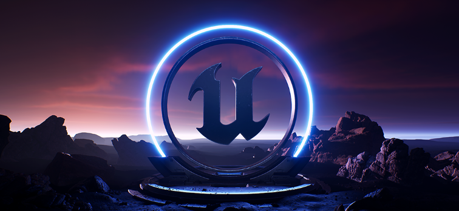

Unreal, Rendering, Davicni Resolve
After graduation I took a deep dive into Unreal Enginge, and it's capability to provide realistic real time rendering. I experiemented with various lighting tools, including nanite and path tracer to create interesting enviorments. Using Unreal's texture and material editor, as well as the landscape tools, I was able to tweak shots to line up with my vision.
Using the built in environment light mixer I was able to tweak the lighting settings and establish a framing shot ready for rendering in 4k. In the example shot above I used path tracer and rendered and edited using ACES with the OCIO config in unreal. Then, using Davicni Resolve I was able to add some color grading, vignetting, and various tweaks.